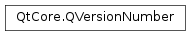

QVersionNumber¶
Note
This class was introduced in Qt 5.6.
Synopsis¶
Functions¶
- def
__eq__(, rhs) - def
__ge__(, rhs) - def
__gt__(, rhs) - def
__le__(, rhs) - def
__lt__(, rhs) - def
__ne__(, rhs) - def
isNormalized() - def
isNull() - def
isPrefixOf(other) - def
majorVersion() - def
microVersion() - def
minorVersion() - def
normalized() - def
segmentAt(index) - def
segmentCount() - def
segments() - def
toString()
Static functions¶
- def
commonPrefix(v1, v2) - def
compare(v1, v2) - def
fromString(string)
Detailed Description¶
The
PySide2.QtCore.QVersionNumberclass contains a version number with an arbitrary number of segments.QVersionNumber version(1, 2, 3); // 1.2.3
-
class
PySide2.QtCore.QVersionNumber¶ -
class
PySide2.QtCore.QVersionNumber(seg) -
class
PySide2.QtCore.QVersionNumber(seg) -
class
PySide2.QtCore.QVersionNumber(maj) -
class
PySide2.QtCore.QVersionNumber(maj, min) -
class
PySide2.QtCore.QVersionNumber(maj, min, mic) Parameters: - seg –
QVector - mic –
PySide2.QtCore.int - maj –
PySide2.QtCore.int - min –
PySide2.QtCore.int
Produces a null version.
Constructs a version number from the list of numbers contained in
seg.Constructs a
PySide2.QtCore.QVersionNumberconsisting of just the major version numbermaj.Constructs a
PySide2.QtCore.QVersionNumberconsisting of the major and minor version numbersmajandmin, respectively.Constructs a
PySide2.QtCore.QVersionNumberconsisting of the major, minor, and micro version numbersmaj,minandmic, respectively.- seg –
-
PySide2.QtCore.QVersionNumber.enum_252¶
-
static
PySide2.QtCore.QVersionNumber.commonPrefix(v1, v2)¶ Parameters: Return type: PySide2.QtCore.QVersionNumber(constPySide2.QtCore.QVersionNumber&v1, constPySide2.QtCore.QVersionNumber&v2)Returns a version number that is a parent version of both
v1andv2.
-
static
PySide2.QtCore.QVersionNumber.compare(v1, v2)¶ Parameters: Return type: PySide2.QtCore.intCompares
v1withv2and returns an integer less than, equal to, or greater than zero, depending on whetherv1is less than, equal to, or greater thanv2, respectively.Comparisons are performed by comparing the segments of
v1andv2starting at index 0 and working towards the end of the longer list.QVersionNumber v1(1, 2); QVersionNumber v2(1, 2, 0); int compare = QVersionNumber::compare(v1, v2); // compare == -1
-
static
PySide2.QtCore.QVersionNumber.fromString(string)¶ Parameters: string – unicode Return type: PySide2.QtCore.QVersionNumberConstructs a
PySide2.QtCore.QVersionNumberfrom a specially formattedstringof non-negative decimal numbers delimited by a period (.).Once the numerical segments have been parsed, the remainder of the string is considered to be the suffix string. The start index of that string will be stored in
suffixIndexif it is not null.QString string("5.4.0-alpha"); int suffixIndex; QVersionNumber version = QVersionNumber::fromString(string, &suffixIndex); // version is 5.4.0 // suffixIndex is 5
-
PySide2.QtCore.QVersionNumber.isNormalized()¶ Return type: PySide2.QtCore.boolReturns
trueif the version number does not contain any trailing zeros, otherwise returnsfalse.
-
PySide2.QtCore.QVersionNumber.isNull()¶ Return type: PySide2.QtCore.boolReturns
trueif there are zero numerical segments, otherwise returnsfalse.
-
PySide2.QtCore.QVersionNumber.isPrefixOf(other)¶ Parameters: other – PySide2.QtCore.QVersionNumberReturn type: PySide2.QtCore.boolReturns
trueif the current version number is contained in theotherversion number, otherwise returnsfalse.QVersionNumber v1(5, 3); QVersionNumber v2(5, 3, 1); bool value = v1.isPrefixOf(v2); // true
-
PySide2.QtCore.QVersionNumber.majorVersion()¶ Return type: PySide2.QtCore.intReturns the major version number, that is, the first segment. This function is equivalent to
PySide2.QtCore.QVersionNumber.segmentAt()(0). If thisPySide2.QtCore.QVersionNumberobject is null, this function returns 0.
-
PySide2.QtCore.QVersionNumber.microVersion()¶ Return type: PySide2.QtCore.intReturns the micro version number, that is, the third segment. This function is equivalent to
PySide2.QtCore.QVersionNumber.segmentAt()(2). If thisPySide2.QtCore.QVersionNumberobject does not contain a micro number, this function returns 0.
-
PySide2.QtCore.QVersionNumber.minorVersion()¶ Return type: PySide2.QtCore.intReturns the minor version number, that is, the second segment. This function is equivalent to
PySide2.QtCore.QVersionNumber.segmentAt()(1). If thisPySide2.QtCore.QVersionNumberobject does not contain a minor number, this function returns 0.
-
PySide2.QtCore.QVersionNumber.normalized()¶ Return type: PySide2.QtCore.QVersionNumberReturns an equivalent version number but with all trailing zeros removed.
To check if two numbers are equivalent, use on both version numbers before performing the compare.
QVersionNumber v1(5, 4); QVersionNumber v2(5, 4, 0); bool equivalent = v1.normalized() == v2.normalized(); bool equal = v1 == v2; // equivalent is true // equal is false
-
PySide2.QtCore.QVersionNumber.__ne__(rhs)¶ Parameters: rhs – PySide2.QtCore.QVersionNumberReturn type: PySide2.QtCore.bool
-
PySide2.QtCore.QVersionNumber.__lt__(rhs)¶ Parameters: rhs – PySide2.QtCore.QVersionNumberReturn type: PySide2.QtCore.bool
-
PySide2.QtCore.QVersionNumber.__le__(rhs)¶ Parameters: rhs – PySide2.QtCore.QVersionNumberReturn type: PySide2.QtCore.bool
-
PySide2.QtCore.QVersionNumber.__eq__(rhs)¶ Parameters: rhs – PySide2.QtCore.QVersionNumberReturn type: PySide2.QtCore.bool
-
PySide2.QtCore.QVersionNumber.__gt__(rhs)¶ Parameters: rhs – PySide2.QtCore.QVersionNumberReturn type: PySide2.QtCore.bool
-
PySide2.QtCore.QVersionNumber.__ge__(rhs)¶ Parameters: rhs – PySide2.QtCore.QVersionNumberReturn type: PySide2.QtCore.bool
-
PySide2.QtCore.QVersionNumber.segmentAt(index)¶ Parameters: index – PySide2.QtCore.intReturn type: PySide2.QtCore.intReturns the segement value at
index. If the index does not exist, returns 0.
-
PySide2.QtCore.QVersionNumber.segmentCount()¶ Return type: PySide2.QtCore.intReturns the number of integers stored in
PySide2.QtCore.QVersionNumber.segments().
-
PySide2.QtCore.QVersionNumber.segments()¶ Return type: Returns all of the numerical segments.
-
PySide2.QtCore.QVersionNumber.toString()¶ Return type: unicode Returns a string with all of the segments delimited by a period (
.).
© 2018 The Qt Company Ltd. Documentation contributions included herein are the copyrights of their respective owners. The documentation provided herein is licensed under the terms of the GNU Free Documentation License version 1.3 as published by the Free Software Foundation. Qt and respective logos are trademarks of The Qt Company Ltd. in Finland and/or other countries worldwide. All other trademarks are property of their respective owners.